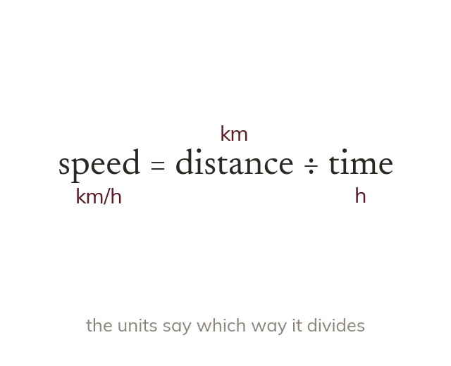

A compound measure divides
A compound measure is one quantity divided by another. Its units show which: km/h means speed = distance ÷ time.
A compound measure is one quantity divided by another. Its units say which: km/h is kilometres divided by hours, so speed = distance ÷ time.